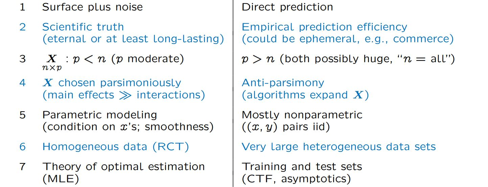

Going right into the topic, how exactly are the two different approaches different? They are both statistics, so how can they really be all that different?
Turns out, the difference can be quite drastic.
First thing to consider is the underlying objective of the modeling/algorithmic procedure. Estimation algorithms work with a critical assumption: There is a
(smooth) surface, the representation of the scientific truth, that is blanketed by chaotic noise of the world. All the effort is focused around getting to the
core of this surface, ultimately uncovering the scientific truth; a rule in which this universe is run. In comparison, prediction algorithms, true to its name,
only focuses on exactly that -prediction. The thought is to throw every little thing that we know that connects to the value that we want to find (and sometimes
this connection is a stretch) in order to find get the closest prediction possible. In order to acheive this, data scientists and machine learning engineers are
very comfortable with using ephemeral data that inevitably requires an update. Often, it is in my experience that the model that is created is only relevant
until the next batch of data. Most of the major differences in the algorithms stem from these differing perspectives and approaches.
Today we discuss the new era of pure-prediction algorithms, the differences that these algorithms have from more classical statistical approach,
and how the landscape is changing to possibly accomodate for them. Below are a short list of different algorithms that each serve
a differnt purpose.
- Prediction: Random Forests. Boosting, Support Vector Machines, Neural Nets, Deep Learning
- Estimation: Odinary Least Squares (OLS), Logistic Regression, Generalized Linear Model: Maximum Likelihood Estimation
- Attribution (Significance): ANOVA, Lasso, Neyman-Pearson
Perhaps if you are familiar with buzzwords from the data science world, you know some (or all) of the algorithms listed under the "Prediction" catagory.
These have gotten amazing public attention, and while still stemming from traditional regression theory, they can operate on an enormous scale and have
many popular successes.
Equivalently, if you are familiar with statistics, you may recall hearing some of the algorithms listed in the other two catagory.
These are some things that lasted the trials of time, something that we have come to depend on over the years.

For many valid reasons, models, summary statistics, and visualizations that attempt to summarize United States as a general population often pop up. This is very helpful,
humans are not all that good at holding multiple pieces of information, and having things that generalize the overall population are incredibly useful reference points
- something any statistician is already aware of. However, I'd argue that these summaries are rarely be dependable.
The reason for this stems from one important statistical assumption -i.i.d. or independent and identically distributed-
and the structure of the United States government that all but violates this assumption. This is easily seen with the advent of coronavirus pandemic.

R isn't a language designed to make applications, it's not a language that was designed to make lengthy programs, nor was it designed with things like programming efficiency in
mind.
R is a programming language designed by statisticians, for statisticians.
Yes, you can create really cool interactive data visualizations. Yes, you can make fully functioning web applications. But you can't do it as cleanly nor as efficiently as other
languages can. And when you do, the final product likely isn't going to look as suave as products from other languages (not to mention likely slower). This is starting to sound
like an R hate-post. So - why use R.